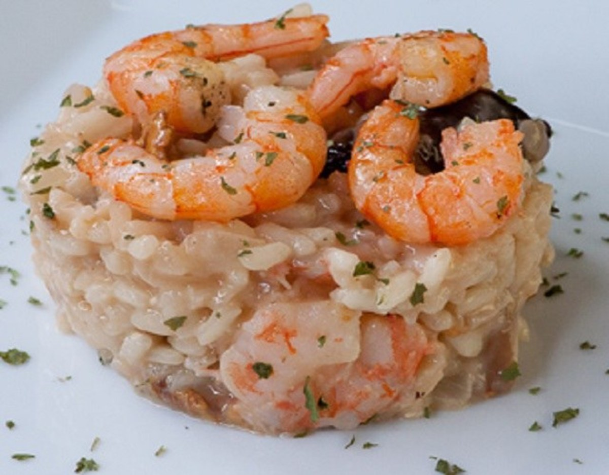

Risotto de Gambas
Ingredientes
Para 1 Persona
- 80g de Arroz arborio
- Caldo de pescado
- Sal
- 1 Vaso de Vino Blanco
- 20g de Gambas
- 1/2 Cebolla
- 1 Pimiento Verde
- Parmensano rallado
Elaboracion:
Primero, se cortan la cebolla y el pimiento en trozos pequeños, seguidamente se pone la cebolla en la sarten, junto a un poco de aceite de Oliva, despues se le pone sal y cuando la ceblla esta transparente se le echa el pimiento verde. 1 min despues se le añaden las gambas y el vino blanco. Al minuto se le añade el arroz. Cuando veamos que esta picado(transparente por fuera, blanco por dentro) le añadimos un poco de caldo. Cuando lo haya chupado se añade mas, así hasta que el arroz este hecho.Por ultimo añadimos el Parmensano rallado y lo emplatamos.